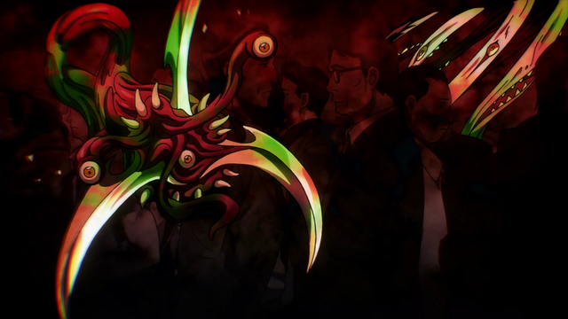
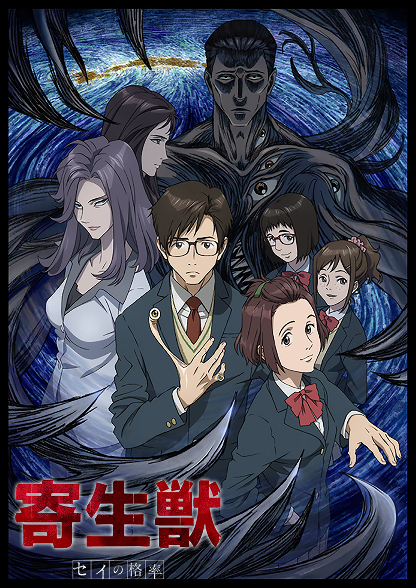
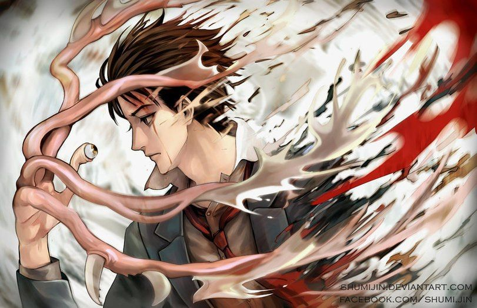
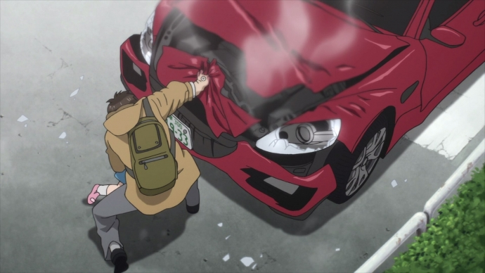

Паразит (яп. 寄生獣 Кисэйдзю:, англ. Parasyte) — манга, написанная и проиллюстрированная Хитоси Ивааки. Согласно опросу, проведенному в 2007 году министерством культуры Японии, по версии Japan Probe, занимает 12-е место среди лучшей манги всех времён. Выходила с 1990 по 1995 годы в 10 томах, а в 2003 переиздана в 8 томах. Выход двух игровых фильмов по мотивам манги состоялся в 2014 (первый фильм) и в 2015 (второй фильм) годах. Аниме-адаптация стартовала в октябре 2014 года и завершилась в марте 2015. Всего вышло 24 эпизода.
Однажды ночью некоторое количество людей и животных по всему миру подвергается заражению паразитами — созданиями неизвестного происхождения. Проникая в тело, эти крохотные существа стремятся захватить мозг, присваивая тело и жизнь носителя. Главный герой, обыкновенный японский школьник, ещё вчера не знавший жизненных забот, теперь один из тех немногих, кому после заражения посчастливилось избежать захвата мозга, обреченных до конца жизни мириться с ультиматумом сосуществования, постоянно подвергая смертельной опасности не только себя, но и всех, кто им дорог…
   